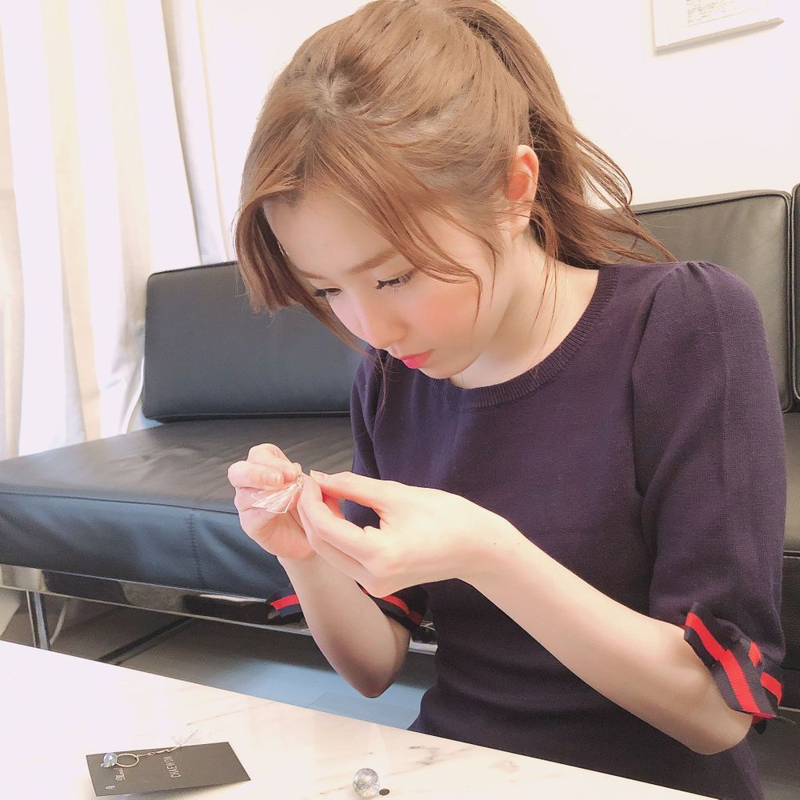
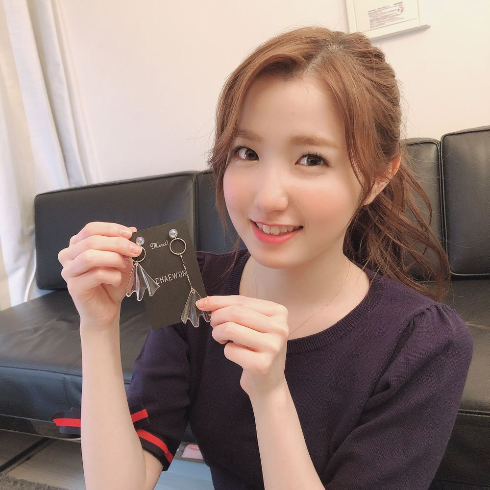

こんばんは🌆
ひいだよ🍓

一時期すごく
アクセサリー作りにハマってたときの！
載せるのすっかり忘れてた🤧
さてこのピアスは
誰のを作ってるでしょう〜😜
この日はすごく集中しすぎて
1日でメンバー全員分の作った🤗
気づいたら夜中だったもん笑
それでそのピアスプレゼントしたら
みんながペンサの時に
つけてくれて嬉しかった思い出☺️
自分が作ったものを使ってくれるって
とっても嬉しいよね😆
この前アーケイド撮影のとき
アクセサリー作りやったけど
また久しぶりに作りたいな🎀
はあ…
早起きしたからやっぱり眠いわ🥱
今日コーヒー飲んだのに
おかしいな〜とか思ったら
そういえばデカフェだった🤭笑
だけどひいはもうコーヒーに慣れたのか
飲んでも飲まなくてもあまり変わらないかも🤷🏻♀️
ではまたっ
아까 일본어로는 질문타임 했는데...
한국어로 못해서 미안해 ㅠㅠ
히한테 궁금한거 있으면 언제든지 알려줘~🤗
아 그러면 이번엔 내가 이호에게 질문 해도 돼??
자!!!
좋아하는거 하나 골라봐!!!
첫번째 : 햄버거🍔 vs 샌드위치🥪
두번째 : 영화 vs 드라마
세번째 : 히짱 vs 토미 vs 히토마
저녁 맛있게 먹어 이호😚

正解はチェウォンオンニのでした！！
（1枚目の写真拡大したら普通に書いてあったね）
他にも作ってる写真たくさんあったから
気が向いたら載せます🙃←ㅎㅎㅎ
ばいばーい👋🏻
ひいまる🥟